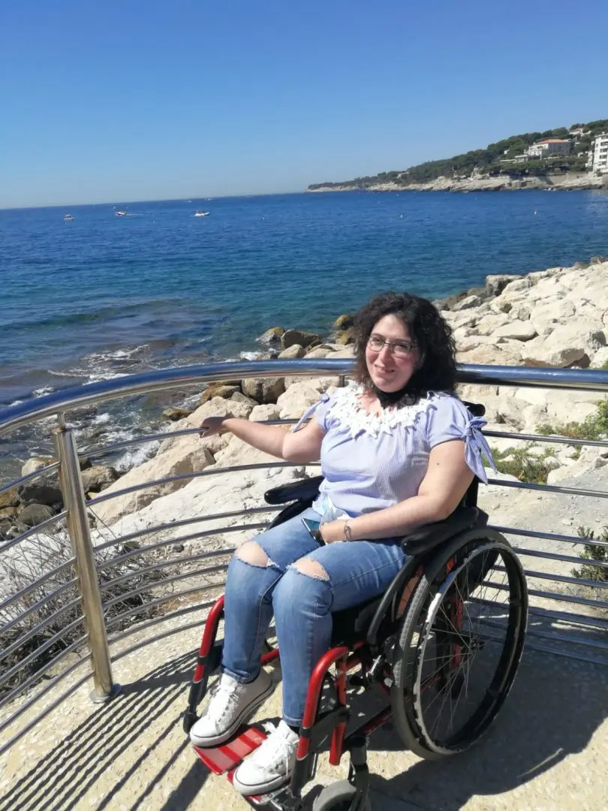
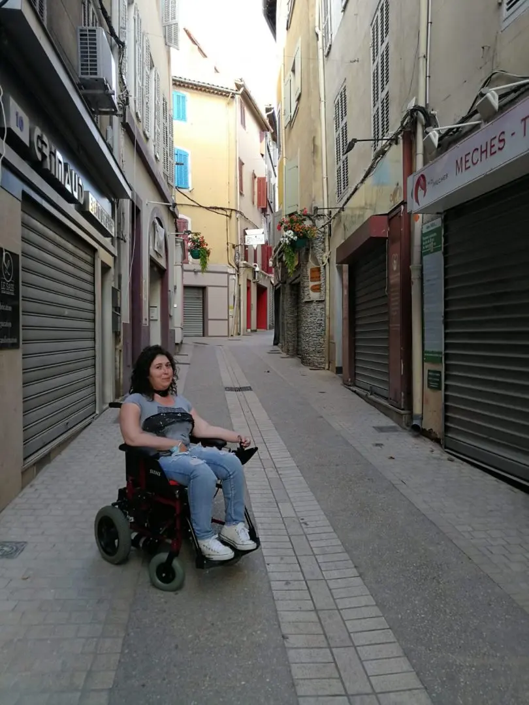
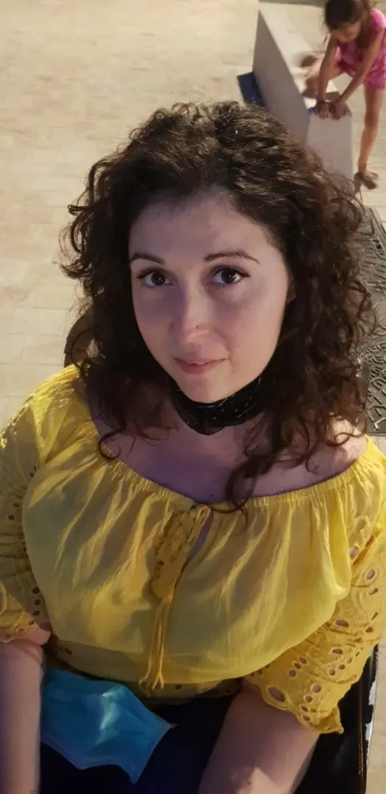
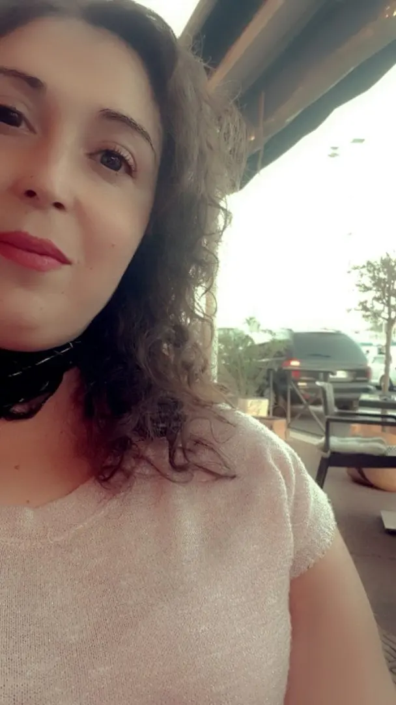

La mia consapevolezza

Qualche anno fa, mai avrei pensato di parlare così liberamente della mia disabilità. Non avevo tale consapevolezza.
Ero una di quelle che si preoccupava di mostrarsi sempre perfetta, sempre il più 'normale' possibile davanti agli occhi degli altri e anche sui social.
Mi preoccupavo di apparire sempre in ordine, senza far vedere oltre la mia sedia a rotelle.
Ero molto più vanitosa, sempre truccata e mai nemmeno il piede fuori posto.
Mi preoccupavo anche se magari qualcuno potesse rimanerci male nel vedere un mio movimento diverso dal suo.

Adesso invece, mi sento sicura di me, mi sento un po' più 'menefreghista' verso chi mi guarda.
Oggi sono sempre io, ma con meno pressione verso me stessa.
Leggermi adesso è un po' come sfatare me stessa.
Sono da così tanto tempo seduta che ho la piena consapevolezza di tutti i miei limiti e non per questo mi sento infelice.
Viviamo dicendo continuamente che non devono esserci discriminazioni di nessun genere che si tratti di sesso, razza, colore, religione e inabilità.

Eppure tutti noi, almeno una volta, in una delle figure che ho qui sopra elencato, ha provato compassione o addirittura ademarginare.
Sfido chiunque a dire il contrario!
Se un ragazzo mi vede seduta in auto mi fa anche l'occhiolino, se poi mi vede per strada distoglie lo sguardo.
Questo è il mondo in cui viviamo.
E lo stesso vale per un ragazzo di colore ad esempio, se lo vediamo curato gli rivolgiamo anche la parola, se invece è un emigrato quasi lo scostiamo.
Oppure verso i gay, c'è gente che a parlarne sono tutti amici peace and love, poi guai a vedere un abbraccio in pubblico o ancora meno, un colore di capelli più femminile, subito storiciano il naso.
Quel 'nonostante tutto però sei serena' che tutti sono abituati a dirmi, io non lo sento.
Io credo che il mio nonostante tutto ha un altro significato.
Per me è 'nonostante tutto' io ho apprezzato il bello della vita.
A non giudicare e a non dare per scontato nulla. Nonostante tutto io non odio i cervelli piccoli come un fagiolo.

Questa sicurezza di sentirmi serena con me stessa e la piena consapevolezza di me stessa mi è data sicuramente grazie ad una famiglia che mi sostiene sempre.
Ma un po' è anche merito del mio carattere.
Non amo piangermi addosso, il sorriso è l'arma migliore per affrontare un gradino alla volta con pazienza e perseveranza.
Abbattersi, struggersi, lamentarsi non serve a niente perché niente cambierà.
Al contrario però, possiamo affrontare ogni giorno come fosse l'ultimo e dare il meglio di noi stessi sempre, vivere a pieni polmoni i momenti belli e non aspettarci mai niente dal futuro.
Tutto ha un altro sapore se si pensa che ciò che stiamo vivendo nemmeno ce lo stavamo aspettando!
